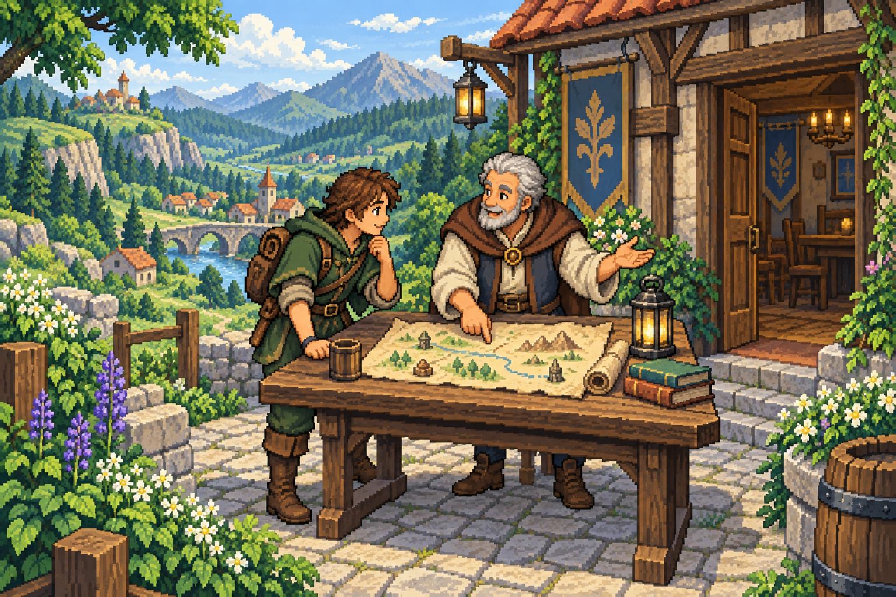

01
Explore your imagery.
Explore your remote sensing imagery and inspect the masks provided by our labelling models. Find the features you want to label.
START WITH MODEL MASKSEVERY PIXEL HOLDS MEANING.
There’s a whole world in your imagery.
Let’s make sense of it.
The SATIFY app helps you turn remote sensing imagery into labelled data. Explore your images, mark what matters, and refine the result for your next step.
The app is invitation only. Try our free game first.
Find 2 water areas, 3 forests & 3 built-up areas.
0 / 8OUR MISSION: LABELLING THAT SATIFYS.
Explore your remote sensing imagery and inspect the masks provided by our labelling models. Find the features you want to label.
START WITH MODEL MASKSForest, water, bare ground—or something of your own. Define the classes that matter to your project and decide what each label represents.
YOUR CLASSES, YOUR CHOICEUse model-assisted tools to turn masks into labels with less manual work. Review the details, refine where needed, and download your result.
MODEL ASSISTANCE. YOUR CONTROL.YOUR IMAGERY. YOUR WORKSPACE.
Work with satellite, drone, and aerial imagery using the tool that fits each task. Fill a model-suggested region, label similar pixels, or draw the details yourself. Our model-assisted workflow helps you label complex areas in fewer steps, saving time on repetitive manual work. Spend more of your time reviewing and refining the details—with control over every label.
LEARN BY PLAYING · SATIFY — THE GAME
Not sure if SATIFY is right for you? Try the game for free, without an account or invitation. It introduces the app’s labelling workflow through playful challenges, with fewer tools and less complexity to get in your way.
Explore real remote sensing imagery, spot features, and use model-assisted tools to label them. Compare views from different dates and see how landscapes change. Build confidence with the concepts before bringing your own imagery and classes into the app.
GET IN TOUCH
Have imagery to label, a workflow to improve, or a question about SATIFY? Tell us what you’re working on and where you could use a hand.
Whether you’re planning your first labelling project or refining an existing one, let’s explore how SATIFY could help. We’d also love to hear your ideas and feedback.
Say hello